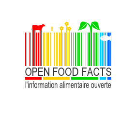
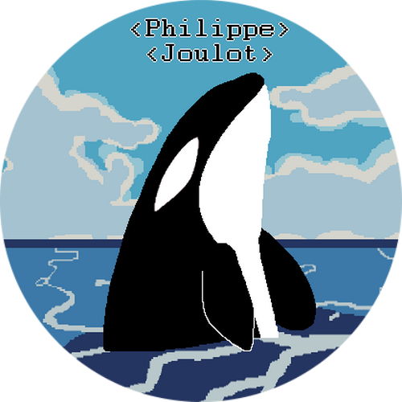

MozillaJ'investie une grande partie de mon temps libre en bénévolat pour la fondation Mozilla. Je me rends sur les stands afin de parler aux gens des produits et de la mission de Mozilla. Je participe à divers événements organisés par la communauté tels que les meetups, les mercredis docs ou encore les hackatons. Je développe également des applications pour Firefox OS afin d'enrichir le marketplace. mozilla.com |
|
|  |
Open Food FactsDans le cadre d'un hackathon dans les bureaux de Mozilla Paris, j'ai contribué au développement de l'application Firefox OS Open Food Facts. Open Food Facts est un projet collaboratif qui répertorie les produits alimentaires du monde entier. fr.openfoodfacts.org |
|  |
Votre projet bénévole?Si vous avez besoin d'un développeur, n'hésitez pas à me demander en m'expliquant votre projet. S'il me tient à coeur et suivant mes disponibilités, je peux peut-être vous apporter mon aide. |